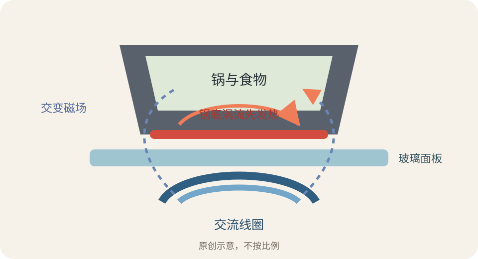
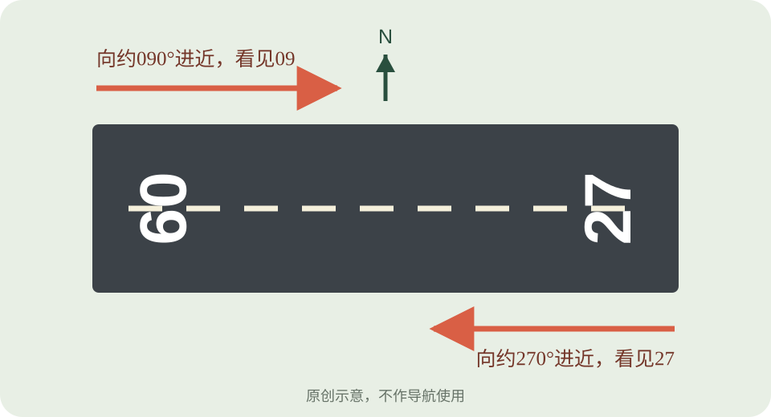
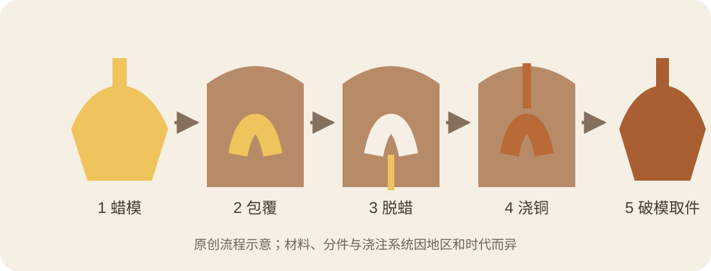

今日热点 01 · 贸易 / 生活成本
美加关税进入最后数小时：50%是新增税率，不是所有加拿大商品都翻倍
美国此前宣布，自美东时间8月19日零时01分起，对约200亿美元特定加拿大商品加征50%关税。北京时间19日上午，双方仍在谈判。先分清生效时点、商品清单和谁先付款，才不会把标题里的数字误读成一张总价表。
发生了什么
两国领导人通话后，谈判仍卡在生效时点前
美联社8月17日报道，加拿大总理马克·卡尼与美国总统唐纳德·特朗普已通话两次，官员把谈判形容为密集而微妙。美国公告设定的生效时间是美东时间8月19日零时01分，也就是北京时间19日12时01分。
这轮措施针对清单内约200亿美元加拿大商品，报道举到冰球杆、厨房橱柜和压舌板。它不是把所有从加拿大进口的东西统一加价50%，也不等于消费者结账时立刻看到同幅度涨价。
数字怎么读
新增50%先由进口商在海关缴纳，之后才沿供应链分摊
关税由进口商向美国海关支付。进口商可以自己吸收一部分，也可能和加拿大供应商重新议价，或把成本转给批发商和消费者。最终价格取决于库存、替代来源、合同期限与市场竞争，不会机械地按税率原样跳升。
还要把“新增税率”与既有税负分开。白宫文件依据《1930年关税法》第338条设置额外关税，并列出适用范围；判断某件商品是否受影响，要看海关分类与原产地，不能只看品牌来自哪里。
为什么值得跟踪
每天约20亿美元的双边货物流动，让小清单也可能有长尾影响
美加之间每天跨境货物交易约20亿美元。即使本轮清单只覆盖其中一部分，制造商仍可能提前备货、改签合同或寻找替代供应商。冰球杆是醒目的例子，医疗耗材和家装产品的成本传导更值得普通家庭留意。
谈判在本期检查时点尚未公布结果。午后再看新闻时，先确认税率是否如期生效、是否缩小清单，或是否出现临时豁免；这三种变化会导向完全不同的标题。
聊天时可以补一句
关税新闻最容易把政策数字、海关缴款和零售价混成一件事
一个好用的追问顺序是：谁征、对什么征、何时生效、谁先付钱。答完这四项，才轮到估算消费者承担多少。若商品不在清单内，或进口商能换到别的来源，标题中的50%与货架价格之间可能隔着很长一段路。
新增50%关税只适用于清单内商品，并先由美国进口商缴纳；是否转成零售价上涨，要看库存、议价和替代供应。
查看事实与延伸来源
美联社8月17日：谈判进度、商品规模与生效时点
白宫公告：第338条额外关税的范围与时间
美国贸易代表办公室：措施的政策说明
今日热点 02 · 音乐 / 流行文化
麦当娜拿到11项VMA提名：一张名单把五个职业年代连在一起
2026年MTV音乐录影带大奖提名8月18日公布。麦当娜以11项领跑，并在职业生涯的每个十年都得到过提名；泰勒·斯威夫特有9项，只要再获一奖就会独占VMA历史获奖数第一。
名单里的两个数字
11项与9项，分别连着跨年代纪录和历史总奖数
美联社按官方名单统计，麦当娜今年得到11项提名，覆盖年度艺人、年度录影带等类别。她从1980年代起持续出现在VMA提名中，今年让这条记录延伸到第五个职业年代。
泰勒·斯威夫特得到9项提名。她与碧昂丝目前各有30座VMA；今年任何一次获奖，都会让她单独成为该奖历史上获奖最多的艺人。提名数和历史获奖总数是两套指标，别把两张榜混在一起。
为什么是录影带奖
VMA奖的不只是一首歌，还包括画面如何把歌重新讲一遍
VMA的核心对象是音乐录影带，因此导演、摄影、剪辑、编舞与视觉效果都能成为独立类别。一首热门歌不必自动赢得最佳录影带；评审与观众还会看它怎样使用镜头、表演和叙事。
麦当娜1986年成为首位单独获得Video Vanguard荣誉的女性艺人。她与MTV时代相互塑造的关系，使今年的11项提名不只是数量大，也让人看到音乐传播从电视轮播一路转到流媒体和短视频。
什么时候看
颁奖礼定在9月27日，部分奖项继续开放公众投票
官方节目页把直播定在9月27日美东时间19时30分，地点是洛杉矶Peacock Theater；CBS、MTV和Paramount+播出。官方投票页列出可由观众参与的类别和候选人。
从提名到颁奖还有一个多月。期间表演嘉宾、投票轮次和转播安排可能继续更新，今天能确定的是提名名单与总数，而不是最终赢家。
麦当娜今年11项提名，记录跨越五个职业年代；泰勒·斯威夫特有9项，再获一奖就会独占VMA历史总奖数第一。
查看事实与延伸来源
美联社8月18日：提名数量、历年纪录与播出安排
VMA官方投票页：类别与候选名单
Paramount官方节目页：时间、地点与播出平台
今日热点 03 · 航天 / 月球
LRO拍到猎鹰9号撞击坑：18米宽的“蝴蝶翅膀”补上了实测答案
8月5日，猎鹰9号第二级按计划撞击月球背面。NASA月球勘测轨道器在8月11日至12日拍到新弹坑：约18米宽、不到3米深，周围深浅相间的喷射物展开成蝴蝶翼状。这是此前撞击计划之后的重大实测增量。
新增了什么
六天后进入视野，轨道器才有机会拍到目标区域
撞击发生后，目标地点要等月球转到LRO轨道下方。轨道器8月11日和12日从约96公里高度飞越，以每秒约1.6公里的速度拍摄；窄角相机在这些条件下仍能辨认约1米尺度的地表细节。
影像把撞前与撞后地貌对齐，确认新弹坑位于北纬19.4759度、东经266.7138度附近。此前只能根据飞行轨迹预测落点，如今有了实际地表标记。
弹坑长什么样
宽约18米、深不足3米，喷射物呈深浅两色
NASA测得弹坑约60英尺，也就是18米宽，深度不到10英尺或3米。它比许多人想象得浅：火箭级以斜角撞击，能量把表层物质推向两侧，而不是只向下挖出一个深碗。
弹坑周围的亮、暗喷射物像两片翅膀。研究人员把较暗物质解释为较浅、暴露更久的月壤，较亮物质来自更深处、较新鲜的地层；纹理可反推撞击角度和浅层结构。
为什么主动撞月球
处置火箭级，也顺便得到一次已知质量与速度的撞击实验
把用完的火箭级导向预定无人区域，可以降低它留在轨道上成为长期碎片的风险。更难得的是，任务团队掌握撞击物的质量、轨迹和时间，能把这些参数与最终弹坑逐项对应。
这种“已知输入、实测结果”的机会并不常见。它帮助研究人员校准弹坑尺度与撞击条件的关系，也为将来辨认自然小天体造成的新鲜地貌提供参照。
与8月4日那期有什么不同
上次写观测计划，这次有了尺寸、深度和地表纹理
8月4日能确认的是火箭级将撞向月球、哪些探测器可能观测，以及为何选择这种处置方式。今天新增的三项硬结果是实际位置、弹坑几何和喷射物分布。
同一事件只有在可验证信息改变结论时才值得再写。单纯换一张图片不够；这次影像把“预计会留下弹坑”推进成了可测量的月面实验。
LRO确认新弹坑约18米宽、不到3米深；深浅相间的翼状喷射物，为撞击角度和月球浅层材料留下可测证据。
查看事实与延伸来源
NASA：LRO影像、弹坑尺寸与喷射物解释
LROC影像页：撞前撞后对比与观测参数
美联社8月18日：观测时点、飞行高度与任务背景
涉猎 01 · 厨房 / 电磁学
电磁炉为什么先热锅：玻璃面板不是发热源
电磁炉线圈产生快速变化的磁场，导磁锅底内出现涡流，电阻把电能转成热。热从锅底传给食物，也会反过来把玻璃面板烫热；“面板不发热”不等于用完后可以立刻摸。

线圈产生交变磁场，锅底中的涡流先把锅加热；玻璃面板主要被热锅反向加热。原创示意，不按比例。
能量走哪条路
电流在线圈里变化，热却主要出现在锅底
灶台下方的线圈通入交流电，周围磁场随之快速变化。导磁锅底处在这个磁场里，会感生一圈圈涡流；金属有电阻，电流通过时便产生热。
传统电炉先把加热盘烧热，再隔着面板把热传给锅。电磁炉少走一段路，所以响应更快。真正烹饪时仍有热从锅底传回玻璃，余温指示灯不能省略。
为什么有的锅不工作
磁铁能否牢牢吸住锅底，是最方便的初筛
铸铁和许多磁性不锈钢锅能与磁场有效耦合。纯铜、玻璃、陶瓷和部分铝锅本身通常不行，除非底部复合了一层适合电磁炉的磁性材料。
把一块磁铁贴在锅底：吸得牢，通常可以使用；吸力很弱或完全不吸，就要看制造商标识。锅底还应较平整，过小或翘曲会让灶具难以检测，也降低耦合效率。
常见误会
发热不只靠“磁滞”，涡流通常是更直接的解释
网上常把电磁炉说成铁磁材料不断翻转磁畴而发热。磁滞确实可能贡献一部分损耗，但伊利诺伊大学物理问答指出，锅底里的感生涡流及其电阻损耗通常是主要来源。
因此，能被磁铁吸住是判断耦合能力的实用办法，却不是“磁性越强，锅就一定越热”的简单比例。锅底厚度、电阻率、线圈频率和控制程序都会改变表现。
电磁炉用交变磁场在锅底感生涡流，锅先发热，再把热传给食物和玻璃面板；磁铁测试只是锅具适配的初筛。
查看事实与延伸来源
美国能源部：电磁感应、锅具判断与使用边界
伊利诺伊大学物理问答：涡流与磁滞在加热中的作用
涉猎 02 · 航空 / 标识
跑道上的09和27是什么意思：同一条跑道有两个方向号码
跑道号码取进近方向磁方位角的十位数，并四舍五入成两位数。朝约90度的一端写09，反向约270度的一端就是27；平行跑道再加L、C、R。地球磁场慢慢变化，号码也可能跟着改。

飞行员朝约090°方向进近时看见09，反向朝约270°时看见27；两端号码相差18。原创示意，不作导航使用。
先读数字
把磁方位角除以10，再写成两位数
FAA规则把跑道中心线的磁方位角舍入到最近的10度，再去掉末尾的零。约90度写成09，约270度写成27；接近正北通常写36，而不是00。
同一条跑道可以从两端起降，所以必须有两个名称。相反方向相差180度，除以10就是18：09的另一端是27，18的另一端是36。
再看字母
L、C、R区分平行跑道，名称由飞行员视角决定
两条或三条大致同向的跑道会加Left、Center、Right的缩写。站在进近方向看，左边是L，右边是R；换到另一头看，左右位置互换，因此09L的反向端通常会写27R。
机场若有四条以上平行跑道，会通过错开一组号码等办法避免重名。号码首先服务于无线电通话和快速识别，不是按跑道修建顺序排列。
号码为什么会改
跑道没转，磁北却在慢慢移动
跑道铺好后方向基本不变，但编号参考磁方位。地球磁场随时间漂移，磁方位越过舍入边界后，原号码就可能与规则不符。
FAA在里诺机场的改号说明中，把多条跑道从17/35改为18/36，并同步更新标志、航图和导航数据库。改号看似只是重新刷漆，实际要让地面标识、空管口令和电子数据在同一天对齐。
跑道号约等于进近磁方位角除以10；同一跑道两端相差18，平行跑道用L、C、R区分，磁北漂移还会触发改号。
查看事实与延伸来源
FAA航空资料手册：跑道数字与平行跑道字母规则
FAA里诺机场改号说明：磁差变化与系统同步
SKYbrary：两端编号、平行跑道字母与ICAO规则
涉猎 03 · 工艺 / 青铜
失蜡法怎样留下青铜：模具要毁掉，空腔才会出现
工匠先做蜡模，再用耐火材料包住它。加热时蜡流走，留下同形空腔；熔融青铜灌入、冷却，最后敲掉外模。直接失蜡法通常得到独一件，间接法则能保留母模，继续复制蜡模。

蜡模被耐火材料包覆，加热脱蜡后形成空腔，再浇入青铜并破模取件。原创流程示意，具体材料与步骤因地区、时代而异。
基本步骤
蜡先占据形状，离开后把位置让给金属
蜡容易塑形，也能刻出细节。工匠在蜡模上接出浇口和排气道，再包覆黏土等耐火材料。模具加热后，蜡融化流出，内部留下与作品外形相同的空腔。
青铜熔液从浇口进入，空气和气体从通道排走。金属冷却后，外模被敲碎，浇口残段切掉，表面再修整、打磨或着色。名称里的“失”指的就是蜡模在过程中消失。
实心还是中空
大型雕像常把蜡做成薄层，里面另有耐火芯
若整件蜡模都换成青铜，作品会很重，也耗费大量金属。中空铸造先做内芯，再在外面覆一层蜡；脱蜡后，青铜只填入内芯与外模之间的薄空隙。
古希腊大型青铜像常分段铸造，头、躯干和四肢完成后再连接。纽约大都会艺术博物馆的技术说明指出，中空法让真人尺度甚至更大的雕像成为可能。
为何能复制
直接法牺牲原蜡模，间接法先从母模翻出多个蜡壳
直接法围着原蜡模做模，蜡一旦流走就不能复原，成品通常只有一件。间接法先从泥塑或其他母模取得分片模具，再用这些分片翻制蜡层，因此母模和模片还能继续使用。
失蜡铸造并非单一文明独有。大都会博物馆分别记录了古希腊大型雕像与非洲金属器的做法；基本逻辑相通，合金、模料、分件和表面处理却会随地区与时代变化。
失蜡法用蜡先占住形状，脱蜡后把空腔交给青铜；中空法节省重量，间接法则通过保留母模实现重复翻制。
查看事实与延伸来源
大都会艺术博物馆：古希腊青铜雕像的直接、间接与中空铸造
大都会艺术博物馆：非洲失蜡铸造的材料与工序
维多利亚与阿尔伯特博物馆：失蜡铸造的基本流程
“图像最大的价值，在于它迫使我们注意到那些从未预料会看见的东西。”
约翰·图基《探索性数据分析》（1977） · 本刊译
图基把图表当成发现工具，而不只是汇报结果的装饰。先画出来，异常值、空白和原先没设想过的关系才可能冒头。真正有用的图不负责替结论化妆，它会逼分析者回头检查数据、尺度和假设；若画面只重复已经知道的答案，信息价值往往有限。画完之后追问一个意外，常比再添一种颜色更有用。
核对原文与语境
“事实只有在历史学家召唤它们时才会说话；由他决定让哪些事实发言，以及按什么次序、置于什么语境。”
E. H. 卡尔《历史是什么？》（1961） · 本刊译
卡尔不是说事实可以随意捏造，而是提醒人们：档案不会自动排成一段历史。研究者选择问题、材料和叙述次序，意义才逐渐出现。读一篇历史文章时，除了核对它引用了什么，也要留心哪些同时代证据没有进入正文，以及作者为何从这个节点开始讲。选择无法取消，但选择过程应当经得起追问。
核对原文与语境
“城市不会诉说自己的过去，却像掌纹一样把它保存在自身之中。”
伊塔洛·卡尔维诺《看不见的城市》（1972） · 本刊译
原文接着把过去写进街角、窗格、台阶扶手和旗杆的擦痕里。城市记忆不只在纪念碑和说明牌上，也藏在道路为何弯曲、旧门洞为何被封、店铺沿街怎样排列。散步时若问一句“这里为什么长成这样”，眼前的空间就会从背景变成可以阅读的材料。拆掉或保留一处旧物，都会改写后人能读到的句子。
核对原文与语境
“没有内容的思想是空洞的，没有概念的直观是盲目的。”
伊曼努尔·康德《纯粹理性批判》（1781／1787） · 本刊译
这句位于康德讨论感性与知性的地方。只收集感觉材料，却没有概念来组织，经验难以成为判断；只在概念里推演，又不接受具体材料约束，思想也会失去对象。放到日常分析中，就是让观察和框架互相校正：数据改变模型，模型也告诉我们下一步该看什么。两边任何一边独占，都容易把未知误认成结论。
核对原文与语境
“究天人之际，通古今之变，成一家之言。”
司马迁《报任安书》（约前91年）
司马迁用这三层目标说明《史记》的写作志向：考察自然、命运与人事的边界，把分散年代中的兴衰变化连起来，最后形成能够自负其责的解释。它不是把旧闻简单堆满篇章。“一家之言”也不是任性立论，前面还有网罗材料、考察行事和推究成败的笨功夫。观点之所以站得住，靠的是材料和判断一起承担后果。
核对原文与语境